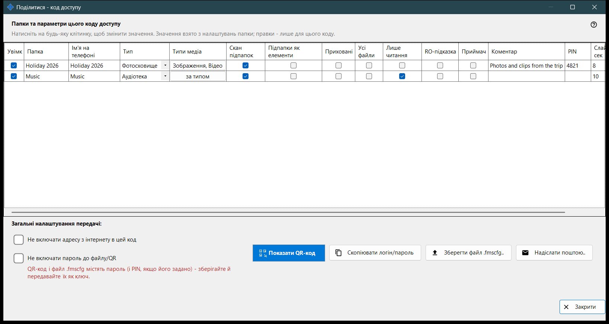
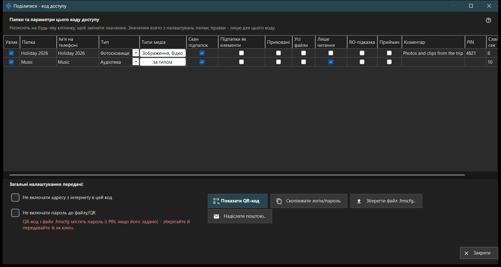

Поділитися - код доступу
Призначення
Створює код доступу для телефона: QR-код і файл .fmscfg, які містять адресу, логін і вибрані папки. Відкривається кнопкою «Поділитися» головного вікна, коли роздачу ввімкнено, і перш ніж видати код, перевіряє, що телефон справді може дістатися до ПК.


Порядок дій
- Позначте папки, які потрібно включити до коду.
- Змініть будь-яку клітинку таблиці, яка для цього коду має відрізнятися.
- За потреби позначте «Не включати адресу з інтернету в цей код» або «Не включати пароль до файлу/QR».
- Дочекайтеся перевірки доступу.
- Покажіть QR-код, збережіть файл .fmscfg, надішліть його поштою або скопіюйте логін і пароль.
Елементи вікна
Папки та параметри цього коду доступу
По одному рядку на спільну папку зі стовпцями Увімк, Папка, Ім'я на телефоні, Тип, Типи медіа, Скан підпапок, Підпапки як елементи, Приховані, Лише читання, RO-підказка, Приймач, Коментар, PIN та Слайд-шоу, сек. Клацніть клітинку, щоб змінити значення. Сам PIN не показується: галочка означає, що його задано, а клацання відкриває приховане поле, де його можна задати, змінити або прибрати. Значення беруться з власних параметрів кожної папки, а зміни діють лише для цього коду. «Лише читання» - справжнє блокування на сервері; «RO-підказка» лише ховає кнопки редагування в застосунку. Папка-приймач завжди доступна для запису, тому «Лише читання» до неї не застосовується.
Загальні налаштування передачі
«Не включати адресу з інтернету в цей код» змушує телефон підключатися лише через локальну мережу; сервер при цьому не вимикається, а доступ з інтернету для всієї роздачі закривається в налаштуваннях менеджера. «Не включати пароль до файлу/QR» прибирає пароль із коду; передайте його окремо. Чи приймає телефон код без пароля, залежить від версії застосунку.
Перевірка доступу
Поки стан отримується, вікно повідомляє про це. Якщо сервер не запущено, не позначено жодної папки або немає придатної адреси, підказка вказує, чого бракує. Якщо перевірка не завершується, код і файл не видаються: натисніть «Перевірити доступ знову».
Показати QR-код
QR-код і файл .fmscfg відкривають доступ до папок і містять пароль та PIN, якщо його задано - зберігайте й передавайте їх як ключ. Якщо налаштування завеликі для QR-коду, збережіть файл і надішліть його.
Файл, пошта та логін
«Зберегти файл .fmscfg..» записує файл; у файловій системі, яка не може обмежити доступ, або в папці, яку можуть змінювати інші, вікно відмовляє, бо файл містить ключ доступу. «Надіслати поштою..» додає файл як вкладення з приміткою імпортувати його в застосунку для Android і потім видалити. «Скопіювати логін/пароль» поміщає обидва значення в буфер обміну.
Налаштування менеджера · Налаштування спільного доступу SFTP · Налаштування сервера обміну